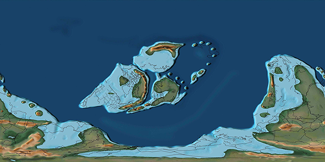
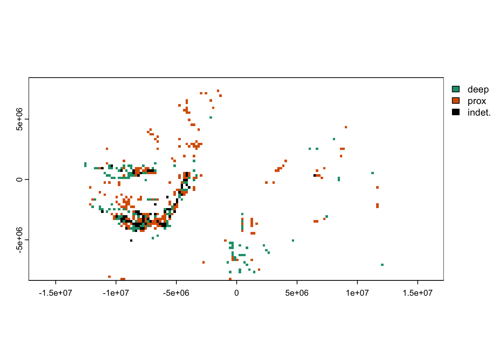
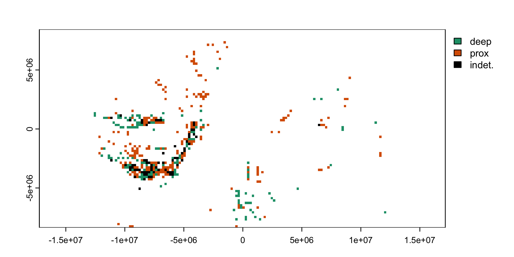

# terra and sf have all the necessary helper functions for spatial operations
library(terra)terra 1.7.46library(sf)Linking to GEOS 3.11.0, GDAL 3.5.3, PROJ 9.1.0; sf_use_s2() is TRUElibrary(divvy)
data(collSilur)
data(occSilur)This vignette is written to model a realistic project flow for ecological occurrence data, providing example uses of divvy functions in R code chunks to analyse geographic range size disparities between comparison categories. The data and hypothesis are representative of many real palaeobiology studies, with the hope of serving as a template for comparing ecology between environments, regions, or clades—for instance, investigations about whether diversity was greater in Gondwanaland or Laurasia, or whether biogeographic connectedness was greater within reefal or non-reefal assemblages.
Results herein should not be taken as a conclusive answer to the example research question. For a publication-quality study, ideally one would further vet both taxonomic and environmental assignments in the original public database download, for instance. Similarly, while this vignette illustrates two lines of analysis, additional follow-up inquiries would be prudent to pursue before arguing a definitive palaeoecological interpretation of the results to the research community.
Palaeobiologists often track ecological parameters through time, where, as the main divvy package vignette illustrates, it is crucial to standardise differences in spatial coverage between time steps. However, it is equally important to apply spatial standardisation for comparisons between environment or habitat types, even if data occur within one time step. For instance, consider two habitat types that cover different geographic extents. To determine fairly which habitat hosts more diverse communities, one must account for the difference in spatial coverage. By first subsampling each habitat type into equivalent spatial units, one can then directly and fairly compare richness or other ecological metrics between environments.
In the marine realm, one of the most important environmental axes of ecological differentiation is water depth. Diversity, geographic range size, and other aspects of community structure vary along a gradient of near-shore to deep-water environments. Here, we divide this environmental spectrum coarsely into shallow (proximal) vs. deep (distal) marine habitats. ‘Shallow’ habitats encompass deltaic, (sub)tidal, and shelf margin environments. ‘Deep’ habitats include continental slope and offshore settings, generally beginning at 140 m (Durán and Guillén 2018).
The ecological attribute this case study focusses on is geographic range size, a trait with widespread importance. For instance, range size determines extinction risk to a large degree (Harnik, Simpson, and Payne 2012; Saupe et al. 2015). Range size might influence origination propensity as well, although researchers dispute whether this relationship is positive (Rosenzweig 1995; Maurer and Nott 2001), negative (Hansen 1980; Jablonski and Roy 2003), or unimodal (Gaston 2003; Allmon and Martin 2014).
The environmental niche breadth of a taxon strongly controls its geographic distribution; the maximum attainable extent of a taxon’s range size is the extent of occurrence of that taxon’s suitable habitat. Two consequences of this relationship are that (1) taxa with broad niches (generalists or eurytopic taxa) are expected to occupy larger ranges than those with narrow niches (specialists or stenotopic taxa), and (2) for environments within a given specialisation, a larger geographic distribution of those habitats permits taxa to occupy larger ranges. Taxa may be more restricted than suitable environmental conditions would predict (realised niche breadth), due to biotic or historic factors, but taxa cannot exceed the bounds set by environmental suitability. Since environmental characteristics are more homogeneous in the cold, dark waters of the deep sea than in the topologic complexity of shallow settings, ecologists have long theorised geographic ranges to be larger for deep-dwelling than shallow-water species (Coe 1946; McClain and Hardy 2010; Costello and Chaudhary 2017). Most empirical tests of this hypothesis have relied upon modern data, however, with relatively little evidence from periods of Earth history when ocean circulation and continental configuration were entirely unlike those of today.
The following sections walk through an analysis to test the expectations geographic ranges are wider for (1) eurytopic than stenotopic taxa and (2) deep- than shallow-water taxa, using brachiopod occurrences from the Silurian (444-419 Ma) recorded in the Paleobiology Database (PBDB). Brachiopoda was a diverse clade that made up a large component of Paleozoic benthic communities (Close et al. 2020; Rojas et al. 2021). In the Paleozoic, much of the world’s landmass had coalesced at southermost latitudes into Gondwanaland, with the remaining continents scattered at the equator and separated by the Iapetus, Paleo-Tethys, Rheic, and Panthalassic oceans (map below). Hence, the geometry of a cosmopolitan marine species’ range from the Silurian would differ distinctly from a cosmopolitan range today. Spatial subsampling is crucial to addressing the research questions because the preserved area and distribution of shallow and deep-water habitats also differ from each other.

PBDB downloads of (1) all marine collections and (2) all Brachiopoda occurrences with accepted names at genus-ranking or below are available as attached datasets in the divvy package. Both datasets are subset to relevant columns and are cleaned to remove records missing coordinates. For more information, load the package and query the data objects from the console with ?collSilur and ?occSilur. The script to download and vet the raw data is available as format-data.R within the GitHub repository data-raw folder (link).
# terra and sf have all the necessary helper functions for spatial operations
library(terra)terra 1.7.46library(sf)Linking to GEOS 3.11.0, GDAL 3.5.3, PROJ 9.1.0; sf_use_s2() is TRUElibrary(divvy)
data(collSilur)
data(occSilur)The taxonomic hierarchy and stratigraphic ranges of the occurrence data are standardised against the Sepkoski Compendium already, following the fossilbrush package vignette (Flannery-Sutherland et al. 2022). A further element of cleaning is removal of taxa that occur only once (‘space-time singletons’ sensu Antell et al. (2020)). These records contain insufficient information to contribute to geographic range-size calculations.
nmFreq <- table(occSilur$genus)
sss <- nmFreq[nmFreq == 1] |> names()
sssRows <- occSilur$genus %in% sss
occSilur <- occSilur[ !sssRows, ]
length(sss)[1] 52This step removes 52 taxa with singular occurrence records.
To disregard trivial differences in coordinate values between points from the same or adjacent localities, the next data treatment is conversion of vector (point) data to raster grid cells. For each PBDB record, the ID and centroid coordinates of its encompassing raster cell are saved in new columns. These cell values will be used in spatial calculations later to improve computation time substantially compared to operations on vector point data.
# initialise Equal Earth projected coordinates
rWorld <- rast()
prj <- 'EPSG:8857'
rPrj <- project(rWorld, prj, res = 200000) # 200,000m is approximately 2 degrees
values(rPrj) <- 1:ncell(rPrj)
# coordinate column names for the current and target coordinate reference system
xyCartes <- c('paleolng','paleolat')
xyCell <- c('cellX','cellY')
# collection data
llColl <- vect(collSilur, geom = xyCartes, crs = 'epsg:4326')
prjColl <- project(llColl, prj)
collSilur$cell <- cells(rPrj, prjColl)[,'cell']
collSilur[, xyCell] <- xyFromCell(rPrj, collSilur$cell)
# taxon occurrences
llOccs <- vect(occSilur, geom = xyCartes, crs = 'epsg:4326')
prjOccs <- project(llOccs, prj)
occSilur$cell <- cells(rPrj, prjOccs)[,'cell']
occSilur[, xyCell] <- xyFromCell(rPrj, occSilur$cell)To compare ecological parameters between preferred environments, the 23 categories in the PBDB environment field must first be reclassified as a binary variable for proximal and deep-water settings. The following division of marine environments is copied from scripts of Antell et al. (2020), who adapted the classification of Nürnberg and Aberhan (2013).
proxTerms <- c("coastal indet.", "delta front", "delta plain",
"deltaic indet.", "estuary/bay", "foreshore", "interdistributary bay",
"lagoonal", "lagoonal/restricted shallow subtidal",
"marginal marine indet.", "open shallow subtidal",
"fluvial-deltaic indet.", "paralic indet.",
"peritidal", "prodelta", "sand shoal",
"shallow subtidal indet.", "shoreface",
"transition zone/lower shoreface",
"intrashelf/intraplatform reef", "reef, buildup or bioherm",
"perireef or subreef", "platform/shelf-margin reef")
deepTerms <- c("basinal (carbonate)", "basinal (siliceous)",
"basinal (siliciclastic)", "deep-water indet.",
"deep subtidal indet.", "deep subtidal ramp",
"deep subtidal shelf", "offshore", "offshore indet.",
"offshore shelf", "slope", "submarine fan", "offshore ramp",
"basin reef", "slope/ramp reef")The most accurate environmental information will be that associated directly with occurrence records. Where available, that is the information this script will prioritise. However, there are many instances of a blank or indeterminate environment field. In those cases, a way to infer probable environment is to determine the predominant environment in the local grid cell based on the environment recorded from any PBDB collections in that cell. A collection in the PBDB can contain any number of occurrences of any number of clades but is tied to a point coordinate—therefore, collections are a rich source of environmental data that is largely independent of occurrences for an individual clade.
divvy provides the classRast() function to convert environmental occurrence points to a raster grid with a dominant environmental class in each cell. In the use below, the function classifies grid cells as proximal or deep-water whenever more than 80% of collections are affiliated with a single environment. The template raster passed to classRast() here has the same resolution, extent, and coordinate reference system as applied above to the occurrence data.
collSilur$bath <- NA
collSilur$bath[collSilur$environment %in% proxTerms] <- 'prox'
collSilur$bath[collSilur$environment %in% deepTerms] <- 'deep'
bathRast <- classRast(rPrj, dat = collSilur, cutoff = 0.8,
xy = xyCell, env = 'bath')
plot(bathRast, col = c("#1B9E77", "#D95F02", "black"))

Predominant environment recorded in PBDB collections
A plot of the environmental distribution inferred from collection data traces the mid-latitude continents (figured above), albeit with gaps. Very few occurrences appear along the coasts of Gondwanaland, perhaps largely due to the under-sampling and under-reporting of the corresponding modern continents relative to North America and Europe. Also note that sampling of northern extents of Laurasia occurs almost exclusively in deep-water settings.
It is now possible to infer binary water depth for brachiopod occurrence records. Where available, the classification will reflect the environment directly associated with occurrences, and otherwise will be inferences from the collections-based raster.
# create a new 'bathCell' column to note the collections-inferred environment
occSilur$bathCell <- occSilur$bath <- extract(bathRast, prjOccs)[['mainClass']]
# refine the enviro where possible based on observations directly linked to occs
occSilur$bath[occSilur$environment %in% proxTerms] <- 'prox'
occSilur$bath[occSilur$environment %in% deepTerms] <- 'deep'A quick inspection reveals roughly equal numbers of occurrences in each environment. However, there are half again as many shallow as deep-water grid cells as indicated by all marine collections—a result that points to the necessity of subsampling. Without accounting for the greater observation of proximal habitats, if shallow-water specialists turn out to have equal or larger geographic occupancies than deep-water specialists it might be impossible to tell if this result is due purely to sampling or also to ecology.
table(occSilur$bath) # environment inferred directly from records
deep prox indet.
4966 4124 2035 freq(bathRast, bylayer = FALSE) value count
1 deep 141
2 prox 226
3 indet. 70Inspection also reveals the majority of environments inferred from collection data nearby do match the environments associated with occurrence records directly. Most of the discrepancies occur when collection-derived environment was indeterminate and occurrence data contained specific environment terms.
# what proportion of environments associated with individual records
# match environmental inferences from nearby collections' data?
which(occSilur$bath == occSilur$bathCell) |>
length()/nrow(occSilur)[1] 0.6516729# compare number of indeterminate enviro from collections vs above from records
table(occSilur$bathCell)
deep prox indet.
3616 3330 4158 Now that the data are standardised to the same raster gridding and environmental classification, it is possible to infer the environmental preferences and niche breadth of all taxa. The custom function below labels a focal taxon as a specialist for an environment if more than a threshold proportion of its occurrences (here, 70%) lie within a single habitat type.
# categorise preferences as binary or nonspecific/eurytopic
pref <- function(env, cutoff){
envTbl <- table(env)
if (sum(envTbl[1:2])==0) { 'unk' } else {
envTbl <- envTbl[1:2] / sum(envTbl[1:2]) # proportional enviro abundance
if (any(envTbl[1:2] > cutoff)) { # check if either envrio is predominant
ifelse(envTbl[[1]] > cutoff, names(envTbl)[1], names(envTbl)[2])
} else { 'both' }
}
}
# The bathymetry column of occurrences is an ordered factor, so levels
# 1 and 2 subset by the function correspond to the two environment types
levels(occSilur$bath)[1] "deep" "prox" "indet."# tag each row as from a taxon with deep, proximal, or eurytopic preference
taxa <- unique(occSilur$genus)
occSilur$pref <- NA
cutoff <- 0.7
for (tax in taxa){
taxBool <- occSilur$genus == tax
envOccs <- occSilur$bath[taxBool]
occSilur$pref[taxBool] <- pref(envOccs, cutoff)
}A simple way to split the data into comparison groups used in analysis below is to divide the occurrence dataset into three data.frames: one for deep-water specialists, one for proximal-environment specialists, and one for eurytopic taxa with respect to depth. This data structure is straightforward to illustrate subsampling in the section below but is not the only way to proceed with analysis; for instance, one could organise the data subsets in a list or array instead, and then perform subsampling across that structure’s indices.
deep <- occSilur[ occSilur$pref == 'deep', ] |>
uniqify(taxVar = 'genus', xy = xyCell)
prox <- occSilur[ occSilur$pref == 'prox', ] |>
uniqify(taxVar = 'genus', xy = xyCell)
eury <- occSilur[ occSilur$pref == 'both', ] |>
uniqify(taxVar = 'genus', xy = xyCell)
# the divvy uniqify() function removes duplicate taxon-cell combinations
# for smaller memory use and faster calculations below
# how many taxa specialise in each?
taxaD <- unique(deep$genus)
taxaP <- unique(prox$genus)
taxaE <- unique(eury$genus)
paste(length(taxaD), 'deep;', length(taxaP), 'shallow;', length(taxaE), 'both')[1] "94 deep; 61 shallow; 100 both"The 70% threshold used to define taxon affinities leads to approximately equal numbers of deep and eurytopic taxa and a smaller sample of proximal specialists.
It is now an appropriate point in the workflow to standardise the spatial coverage of occurrences in each comparison group. divvy provides several options of spatial subsampling functions; in the code chunk below, we apply the cookies() subsampling routine to the datasets of deep, proximal, and eurytopic taxa. The arguments reps, siteQuota, and radius define the number of subsampling iterations run, the number of localities to include in each subsample, and the maximum radius of each circular subsampling region, respectively.
The value of reps is set at a number high enough to ensure all possible points are captured in at least one subsample, while keeping the returned object (list of subsampled data.frames) at a manageable size. Increasing the number of reps only slightly prolongs the computational time of subsampling but will linearly slow the runtime of range-size calculations on subsamples in the following sections. In Phanerozoic analyses, Antell et al. (2020) performed 500 replicates of circular subsampling per time step, and Close et al. (2017) did 100 (20 replicates from each of 5 regions defined by minimum spanning trees).
The values of siteQuota and radius are a trade-off between increasing the sample size of localities within each subsample to precisely characterise geographic ranges while limiting the total extent of the subsampling region not to exceed the approximate size of an ocean basin or biogeographic zone.
reps <- 500 # number of subsamples to draw
siteQuota <- 15 # number of sites (equal-area grid cells) in each subsample
r <- 1000 # radial distance in km
set.seed(8)
sampD <- cookies(dat = deep,
xy = xyCell, iter = reps,
nSite = siteQuota,
r = r, weight = TRUE,
crs = prj, output = 'full')
set.seed(9)
sampP <- cookies(dat = prox,
xy = xyCell, iter = reps,
nSite = siteQuota,
r = r, weight = TRUE,
crs = prj, output = 'full')
set.seed(10)
sampE <- cookies(dat = eury,
xy = xyCell, iter = reps,
nSite = siteQuota,
r = r, weight = TRUE,
crs = prj, output = 'full')For further details of subsampling using divvy, including the clustr() function to define subsamples based on minimum spanning tree diameter instead of circular regional constraints, consult the other vignettes and Antell, Benson, and Saupe (accepted).
We need to parameterise geographic range sizes in some way to make quantitative comparisons between ecological groups. One way to do so is with a measure of cosmopolitanism calculated on assemblage-level data (rather than individual taxa), such as the Summed Common species/taxon Occurrence Rate (SCOR). SCOR reflects the degree to which taxa are common/widespread and is decoupled from richness or abundance (Hannisdal, Henderiks, and Liow 2012). divvy provides the sdSumry() function to compute summary statistics about the geographic coverage and diversity of a dataset, including SCOR; conveniently, sdSumry() can take a list of subsampled occurrence data subsets as its data argument and return a single data.frame with columns for the summary variables and a row for each subsample.
metaD <- sdSumry(sampD, xyCell, 'genus', prj)
metaP <- sdSumry(sampP, xyCell, 'genus', prj)
metaE <- sdSumry(sampE, xyCell, 'genus', prj)SCOR is calculated as the sum across taxa of the log probability of incidence: very widespread taxa make a large contribution to an assemblage SCOR, while rare taxa have relatively little influence. When a taxon is present in all sampled locations, its log probability of incidence is infinite. Infinity is nonsensical in an empirical comparison, so let’s screen out subsamples with those values (12 in total, of 1500 subsamples).
# check for infinity values of SCOR and remove them
is.infinite(metaD$SCOR) |> any() # none in deep habitat dataset[1] FALSEis.infinite(metaP$SCOR) |> any() # but some in the prox habitat dataset[1] TRUEis.infinite(metaE$SCOR) |> any() # and some in the all-habitats dataset[1] TRUEinfP <- is.infinite(metaP$SCOR)
metaP <- metaP[ !infP, ]
infE <- is.infinite(metaE$SCOR)
metaE <- metaE[ !infE, ]
sum(infP)[1] 10sum(infE)[1] 2For the permutation hypothesis tests below, it would be ideal for comparison groups to match in sample size. The previous step removed 10 samples from one group, 2 from another, and none from the third—a difference that could be remedied by omitting another 8 and 10 samples from the latter two groups, respectively. Samples could be selected at random. However, one could argue it would unfairly increase the odds of supporting the hypothesis of larger ranges in deep than shallow habitats to randomly omit 10 deep samples but selectively omit the 10 shallow samples where at least one taxon was universally distributed. For a conservative comparison, one could instead omit deep and eurytopic samples with largest values of SCOR.
# make sample size (of subsamples) equal, by removing ones with largest SCOR
lowestN <- min(nrow(metaD), nrow(metaP), nrow(metaE))
sortD <- order(metaD$SCOR, decreasing = FALSE)
metaD <- metaD[sortD, ]
metaD <- metaD[1:lowestN, ]
sortE <- order(metaE$SCOR, decreasing = FALSE)
metaE <- metaE[sortE, ]
metaE <- metaE[1:lowestN, ]Ultimately, the choice of how to perform this selection step makes little difference to results, because it affects only 2% of subsamples.
At last we can compare the degree to which taxa of each ecological group are widespread, within normalised amounts of habitat. There are various test statistics one could calculate. Here are custom functions for a bootstrapping approach that capitalises on the existing division of subsamples to generate nonparametric estimates of how probable SCOR values from one group are to exceed those of another.
# how often does the value in group 1 exceed that in group 2 paired samples?
# randomly shuffle subsample ordering before comparing
testDiff <- function(dat1, dat2, vTest){
n <- nrow(dat1)
dat1 <- dat1[ sample(1:n), ]
dat2 <- dat2[ sample(1:n), ]
h1obs <- dat1[, vTest] > dat2[, vTest]
sum(h1obs) / n
}
# repeat the comparison many times to generate a 95% confidence interval
diffDist <- function(dat1, dat2, vTest, nReps){
testStatDist <- testDiff(dat1, dat2, vTest) |> replicate(n = nReps)
avg <- mean(testStatDist)
ci95 <- c(0.025, 0.975)
null95 <- quantile(testStatDist, ci95)
names(null95) <- c('lwrCI', 'uprCI')
c(null95, 'mean' = avg)
}When we apply the boostrapping test, the results indicate a random region of deep-water habitat contains more taxa with widespread ranges than a proximal habitat two-thirds of the time. Assemblages of eurytopic taxa from any random region almost always contained representatives with more widespread ranges than assemblages of either habitat specialist.
# do deep-water environments harbor more cosmopolitan taxa?
diffDist(metaD, metaP, vTest = 'SCOR', nReps = 1000) lwrCI uprCI mean
0.6122449 0.6592347 0.6349163 # what about eurytopic taxa vs. deep-water specialists?
diffDist(metaE, metaD, vTest = 'SCOR', nReps = 1000) lwrCI uprCI mean
0.9755102 0.9938776 0.9844980 # and if eurytopic species are more widespread than deep,
# they'll also be more widespread than proximal-dwellers
# (since more deep-water species are widespread than proximal are)
diffDist(metaE, metaP, vTest = 'SCOR', nReps = 1000) lwrCI uprCI mean
0.9816327 0.9979592 0.9894939 Another way one could compare SCOR between groups is inspecting the distribution of values in each comparison group. Overall, SCOR values from assemblages of deep-water taxa were slightly larger than those of proximal taxa, while eurytopic taxa were substantially more common than either of those groups (SCOR values 4–5 times as large). Again, note that because these results are derived from spatially standardised data, these numbers account for the fact that eurytopic taxa as defined here had many more cells of suitable habitat available to occupy.
summary(metaD$SCOR) Min. 1st Qu. Median Mean 3rd Qu. Max.
2.183 3.174 3.689 3.700 4.153 5.878 summary(metaP$SCOR) Min. 1st Qu. Median Mean 3rd Qu. Max.
1.090 2.028 3.297 3.135 3.942 5.550 summary(metaE$SCOR) Min. 1st Qu. Median Mean 3rd Qu. Max.
3.383 9.796 15.042 14.959 19.822 28.715 What would the results and conclusions have been without going to the effort to spatially subsample the original occurrence data? For comparison with the average SCOR values listed above, the following code uses the sdSumry() function again, this time on the non-standardised full datasets.
sdSumry(deep, xyCell, 'genus', prj) |> round(digits = 2) nOcc nLoc centroidX centroidY latRange greatCircDist meanPairDist
[1,] 713 250 -3192759 -1735760 166.32 33567.84 8071.8
minSpanTree SCOR nTax
[1,] 130946.3 3 94sdSumry(prox, xyCell, 'genus', prj) |> round(digits = 2) nOcc nLoc centroidX centroidY latRange greatCircDist meanPairDist
[1,] 432 204 -3766508 -957619 166.32 33567.84 7845.98
minSpanTree SCOR nTax
[1,] 127435 2.27 61sdSumry(eury, xyCell, 'genus', prj) |> round(digits = 2) nOcc nLoc centroidX centroidY latRange greatCircDist meanPairDist
[1,] 3462 404 -3134553 -1227392 166.32 33567.84 8321.72
minSpanTree SCOR nTax
[1,] 168862.1 9.46 100In this case the overall direction of results is the same (deep-water taxa tend to be slightly more widespread than shallow-water taxa, and eurytopic taxa are most widespread of all). However, subsampling makes the difference between eurytopic taxa and specialists more pronounced—SCOR values from raw data are estimated about three times larger (rather than 4–5 times larger) compared to shallow- and deep-water taxa.
The preceding section illustrates a way one might quantitatively compare an ecological variable calculated from assemblage or community data. There are many cases where one would be interested in a taxon-specific variable instead, e.g. body size or other traits. The present section demonstrates a way to extract and summarise focal taxon data from subsampled assemblage data. The trait of interest in this instance is geographic range size, which can be parameterised in a variety of ways. The rangeSize() function in divvy returns five measures of geographic distribution, two of which the following code compares between ecological study groups.
# custom function to find all occurrences of focal taxon in a subsample
# and return summary measures of geographic distribution from them
subsampRange <- function(taxa, df, taxCol, coordCols, crs){
taxRange <- function(taxon){
taxBool <- df[, taxCol] == taxon
if (sum(taxBool) == 0){ # case where taxon unsampled
rep(NA, 7)
} else {
taxCoords <- df[taxBool, coordCols]
rangeSize(taxCoords, crs)
}
}
taxa <- sort(taxa)
rngMat <- sapply(taxa, taxRange)
rownames(rngMat) <- c('occurrences', 'centroidX', 'centroidY', 'latRange',
'greatCircDist', 'meanPairDist', 'minSpanTree')
rngDf <- t(rngMat) |> data.frame()
return(rngDf)
}
# run the function on all subsamples of each comparison set. warning:
# these are intensive computations so might be slow (minutes of runtime)
rngD <- lapply(sampD, FUN = subsampRange, taxa = taxa, taxCol = 'genus',
coordCols = xyCell, crs = prj)
rngP <- lapply(sampP, FUN = subsampRange, taxa = taxa, taxCol = 'genus',
coordCols = xyCell, crs = prj)
rngE <- lapply(sampE, FUN = subsampRange, taxa = taxa, taxCol = 'genus',
coordCols = xyCell, crs = prj)The above code chunk produces a list of range-size data for all genera in all subsamples. The lines below average all values for each focal taxon to consolidate these intermediate calculations into per-taxon range data for final analysis.
# summarize a focal species' range size data across all subsamples
taxRange <- function(a, rngL, singletons = FALSE){
tmp <- lapply(rngL, function(x){
aBool <- row.names(x) == a
x[ aBool, ]
})
aDf <- do.call(rbind, tmp)
# option: only consider subsamples where species is sampled multiple times
if (singletons == FALSE){
singl <- aDf$occ == 1
aDf <- aDf[ !singl, ]
}
colMeans(aDf, na.rm = TRUE)
}
# apply summary function over all taxa in subsamples of preferred enviro
rngAvgD <- sapply(taxaD, taxRange, rngL = rngD) |>
t() |> data.frame()
rngAvgP <- sapply(taxaP, taxRange, rngL = rngP) |>
t() |> data.frame()
rngAvgE <- sapply(taxaE, taxRange, rngL = rngE) |>
t() |> data.frame()There are cases where a taxon is observed only once in a given subsample, which is uninformative for any geographic range measure except raw occurrence counts. The custom argument singletons = FALSE omits these cases from consideration for the focal taxon range-size average.
Some taxa are never observed multiple times even with many subsamples. After omitting these taxa, the sample size of genera in each comparison group shrinks to 43 in deep water, 24 in proximal habitats, and 95 occupying a breadth of depths.
rngAvgD <- rngAvgD[ complete.cases(rngAvgD), ]
rngAvgP <- rngAvgP[ complete.cases(rngAvgP), ]
rngAvgE <- rngAvgE[ complete.cases(rngAvgE), ]
sapply(list('D' = rngAvgD, 'P' = rngAvgP, 'E' = rngAvgE), nrow) D P E
43 24 95 The previous section, assessing SCOR as an example of comparing assemblage-based metrics, demonstrated a bootstrapping approach to generate results. As a complementary example, the following chunk uses Frequentist two-sample tests to address each hypothesis. For simplicity, only two measure of geographic range are compared here (grid cell occupancy and summed length of minimum spanning tree); the reader could easily substitute any of the other three in the datasets (latitudinal range, great circle distance, and mean pairwise distance).
The occurrence or occupancy measure of range size is count data, so a Wilcoxon (Mann-Whitney) test is appropriate as a nonparametric test. The second range-size metric, summed length of minimum spanning tree, follows a normal distribution after square-root transformation; a student’s t-test makes parametric comparisons on it.
wilcox.test(rngAvgD$occurrences, rngAvgP$occurrences, alternative='g') # deep vs shallowWarning in wilcox.test.default(rngAvgD$occurrences, rngAvgP$occurrences, :
cannot compute exact p-value with ties
Wilcoxon rank sum test with continuity correction
data: rngAvgD$occurrences and rngAvgP$occurrences
W = 538, p-value = 0.3876
alternative hypothesis: true location shift is greater than 0wilcox.test(rngAvgE$occurrences, rngAvgD$occurrences, alternative='g') # eurytopic vs deep
Wilcoxon rank sum test with continuity correction
data: rngAvgE$occurrences and rngAvgD$occurrences
W = 2794, p-value = 0.0002696
alternative hypothesis: true location shift is greater than 0wilcox.test(rngAvgE$occurrences, rngAvgP$occurrences, alternative='g') # eurytopic vs shallow
Wilcoxon rank sum test with continuity correction
data: rngAvgE$occurrences and rngAvgP$occurrences
W = 1603, p-value = 0.001076
alternative hypothesis: true location shift is greater than 0rngAvgD$minSpanTree <- sqrt(rngAvgD$minSpanTree)
rngAvgP$minSpanTree <- sqrt(rngAvgP$minSpanTree)
rngAvgE$minSpanTree <- sqrt(rngAvgE$minSpanTree)
t.test(rngAvgD$minSpanTree, rngAvgP$minSpanTree, alternative='g') # deep vs shallow
Welch Two Sample t-test
data: rngAvgD$minSpanTree and rngAvgP$minSpanTree
t = 0.10779, df = 38.352, p-value = 0.4574
alternative hypothesis: true difference in means is greater than 0
95 percent confidence interval:
-3.728928 Inf
sample estimates:
mean of x mean of y
26.92918 26.67442 t.test(rngAvgE$minSpanTree, rngAvgD$minSpanTree, alternative='g') # eurytopic vs deep
Welch Two Sample t-test
data: rngAvgE$minSpanTree and rngAvgD$minSpanTree
t = 3.153, df = 82.129, p-value = 0.001129
alternative hypothesis: true difference in means is greater than 0
95 percent confidence interval:
2.119235 Inf
sample estimates:
mean of x mean of y
31.41559 26.92918 t.test(rngAvgE$minSpanTree, rngAvgD$minSpanTree, alternative='g') # eurytopic vs shallow
Welch Two Sample t-test
data: rngAvgE$minSpanTree and rngAvgD$minSpanTree
t = 3.153, df = 82.129, p-value = 0.001129
alternative hypothesis: true difference in means is greater than 0
95 percent confidence interval:
2.119235 Inf
sample estimates:
mean of x mean of y
31.41559 26.92918 The results of per-taxon range size comparisons are less clear than those of assemblage-based SCOR comparisons above. There is no discernible difference in mean range size between deep- and shallow-water species whether measured as occurrence counts or minimum spanning tree distances. However, eurytopic taxa still measure larger than either specialist group, even by conservative thresholds for significance: eurytopic taxa occur in nearly one more grid cell of the 15 in every subsample, and span about 270 km farther in tree length connecting occupied cells. (Recall the tree lengths printed here are square-root transformed.)
vars <- c('occurrences', 'minSpanTree')
sapply(list('D' = rngAvgD, 'P' = rngAvgP, 'E' = rngAvgE),
function(x) apply(x[,vars], 2, mean)
) D P E
occurrences 2.863038 2.898537 3.66210
minSpanTree 26.929182 26.674421 31.41559As with the assemblage-based analysis above, we can investigate the inferences that would have resulted from analysing the original occurrence data, without subsampling.
# calculate geographic range size on alloccurrences (not subsampled)
unsamp <- subsampRange(taxa, df = occSilur, taxCol = 'genus', coordCols = xyCell, crs = prj)
unsampD <- unsamp[rownames(unsamp) %in% taxaD,]
unsampP <- unsamp[rownames(unsamp) %in% taxaP,]
unsampE <- unsamp[rownames(unsamp) %in% taxaE,]
wilcox.test(unsampD$occurrences, unsampP$occurrences, alternative='g') # deep vs shallow
Wilcoxon rank sum test with continuity correction
data: unsampD$occurrences and unsampP$occurrences
W = 2778, p-value = 0.6299
alternative hypothesis: true location shift is greater than 0wilcox.test(unsampE$occurrences, unsampD$occurrences, alternative='g') # eurytopic vs deep
Wilcoxon rank sum test with continuity correction
data: unsampE$occurrences and unsampD$occurrences
W = 7878, p-value < 2.2e-16
alternative hypothesis: true location shift is greater than 0wilcox.test(unsampE$occurrences, unsampP$occurrences, alternative='g') # eurytopic vs shallow
Wilcoxon rank sum test with continuity correction
data: unsampE$occurrences and unsampP$occurrences
W = 5177.5, p-value = 5.463e-14
alternative hypothesis: true location shift is greater than 0unsampE$minSpanTree <- sqrt(unsampE$minSpanTree)
unsampD$minSpanTree <- sqrt(unsampD$minSpanTree)
unsampP$minSpanTree <- sqrt(unsampP$minSpanTree)
t.test(unsampD$minSpanTree, unsampP$minSpanTree, alternative='g') # deep vs shallow
Welch Two Sample t-test
data: unsampD$minSpanTree and unsampP$minSpanTree
t = 1.4578, df = 128.32, p-value = 0.07368
alternative hypothesis: true difference in means is greater than 0
95 percent confidence interval:
-2.172339 Inf
sample estimates:
mean of x mean of y
105.78370 89.87555 t.test(unsampE$minSpanTree, unsampD$minSpanTree, alternative='g') # eurytopic vs deep
Welch Two Sample t-test
data: unsampE$minSpanTree and unsampD$minSpanTree
t = 5.5061, df = 169.6, p-value = 6.687e-08
alternative hypothesis: true difference in means is greater than 0
95 percent confidence interval:
41.22068 Inf
sample estimates:
mean of x mean of y
164.7019 105.7837 t.test(unsampE$minSpanTree, unsampD$minSpanTree, alternative='g') # eurytopic vs shallow
Welch Two Sample t-test
data: unsampE$minSpanTree and unsampD$minSpanTree
t = 5.5061, df = 169.6, p-value = 6.687e-08
alternative hypothesis: true difference in means is greater than 0
95 percent confidence interval:
41.22068 Inf
sample estimates:
mean of x mean of y
164.7019 105.7837 In the bootstrapped analysis of SCOR values, subsampling happened to amplify the differences between comparison groups. In the Frequentist analysis of per-taxon range size in this section, subsampling reduced the quantitative magnitude of differences between comparison groups. To some extent, this muting of absolute differences makes sense given the inherent truncation of geographic ranges due to subsampling. However, looking back at the map of PBDB data distribution, it is also possible to hypothesise that biased sampling artificially inflated group differences. For instance, as noted when plotting the map, sampling coverage of deep-water habitats extends much farther around Laurasia compared to shallow-water habitats. Without accounting for this influence, it is impossible to attribute the greater minimum spanning tree length of deep-water species to ecology alone. After subsampling, although there may be fewer results that are clear, the analyst can trust the results that do emerge as meaningful for biological interpretation.